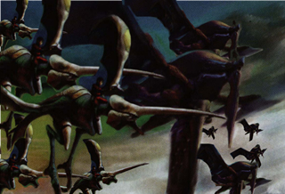
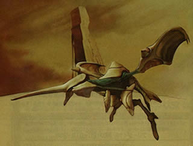
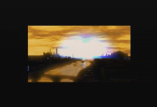

The Downfall of the Ancient Civilization Theory
By Jeremy Prusak
 The war between the dragons, that ended the Ancient Age. |
 Dragons were created to protect the Towers. |
Thousands of years have passed since
a once thriving utopian civilization perished in the dust. What exactly
went on to cause the downfall of this ancient race? Very little is known
about the ancient civilization's past. Supposedly, a great battle was
said to occur in the Ancient Age between the dragons. In Panzer Dragoon
Saga, Gash gives us some very interesting information about the downfall
of the Ancient Age.
Gash: "The dragons ended the Ancient Age by terminating all of the active ruins and Towers." It has been said by Zodac the Compiler, that the dragons were created to protect the Towers. Why would the dragons destroy what they where destined to protect? First of all let's go back to the Ancient Age, and to the creation of the Towers. The Towers were built by the Ancients to mold the land as they saw fit, to create a great utopia. In the process the Towers would control the population by killing off any humans that may be a threat to the Towers' purpose. There were many people in the Ancient Age who were against the creation of the Towers. These people were considered to be rebels. The old diary in Panzer Dragoon Saga sheds some light on the creation of the Towers and the rebels' feelings towards them. An excerpt from the old diary reads, "This world has been molded into its current shape by the powers of a series of ruins we call Towers. The Towers control the environment, breed monsters, and control human populations. Even in the Ancient Age, there were people against the presence of the Towers. The Towers' creators feared these rebels would rise to destroy the Towers, so they created monsters to guard their creations. And the dragons." The rebels went against the will of the Ancients by secretly preparing weaponry with the power to destroy the Towers they despised so much. They created a drone named Azel whose purpose was to open the path to Sestren, which would enable the complete obliteration of the Towers. Unfortunately Azel was stolen from the rebels and her mission would be halted for many years to come. They also created the Light Wing Project and the Heresy program, a program created to destroy the Towers. An explanation of these events can be found in the records of Uru. The records of Uru: "Report regarding the Light Wing. We have at last succeeded in developing the ultimate form of the dragon. But it is more than a dragon. It is a being far different... Something... perhaps even superior to ourselves... A messenger of the Gods. The Institute, which considered the development of the Light Wing, a renegade project, has ordered us to delete all records regarding the Light Wing... But we have decided to record and seal all data regarding the Light Wing into one memory plate divided into 12 pieces called D Units, and scatter them throughout the continent... hoping one day a later generation would inherit our work...Our latest subject is doing fine. That problem has already been solved by manipulating its lifespan. We shall name this drone Azel. A week has passed since the attack. The drone has not been found. She was probably stolen. She has not been completed yet. I only hope she does not become an instrument of destruction." So why would the dragons destroy what they were meant to protect? My theory is they didn't destroy the Towers, they defended them against the Heresy dragons in a great war to end the Ancient Age. I believe the rebels created more than one Heresy program. The program was then downloaded into an immense army of bio-engeneered dragons, created by the rebel's themselves. A great battle between the protectors of the towers and the Heresy dragons therefore commenced. The Ancient's dragons waged war against the rebel's dragons. As the arrows of light flew throughout the air, cities were destroyed and many lives were lost. All of the active ruins and Towers were terminated by the Heresy dragons' wrath. As a result of this great war, both sides suffered great losses. Many of the dragons protecting the towers were either destroyed or deactivated. The Heresy dragons also suffered immensely. In a great effort to stop the will of the Ancients, all of the Heresy dragons were destroyed, except for one survivor. This surviving Heresy program would later return when the time arose once more to defeat the horrors of the Ancient Age. The lightning of divine punishment had ended the Ancient Age. Very few of the rebels survived and the last of the Ancients were forced to go into hibernation. The Ancients had lost the war and hoped to return one day, once again to control the world, for they knew the Towers were not completely destroyed, they were just deactivated, sleeping. The only way to completely destroy the Towers would be to destroy Sestren. The Ancient Age lies in ruins from a great war thousands of years ago. The shadow of the ancient past ominously looms over the peoples heads.They live in fear of the biological weapons created by ancient technologies. When all Hope is lost and the people are in dire need of help, to be saved from the great monstrosities of the Ancient Age, they only have to look to the sky for their savior. The protector of the people, the Heresy dragon that survived the downfall of the Ancient Age, would always rise to protect the future. |
 The destruction of the Imperial Capital was probably similar to what happened to many of the Ancient Age locations. |